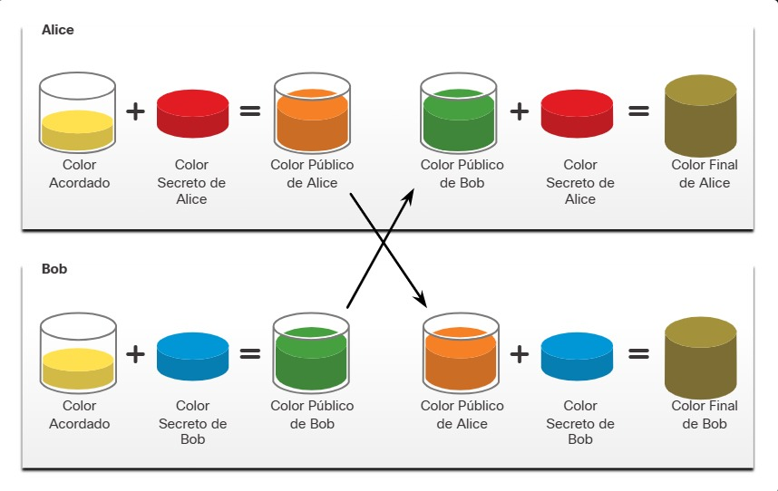

21.2.1 Confidencialidad de los datos
Hay dos clases de encriptación utilizadas para brindar confidencialidad de los datos; simétrico y asimétrico Estas dos clases se diferencian en cómo utilizan las claves.
Los algoritmos de encriptación simétrica, como Encriptado Estandar de datos ( Data Encryption Standard DES), 3DES y Encriptado Avanzado de Datos ( Advanced Encryption Standard AES) se basan en la premisa de que cada parte que se comunica conoce la clave precompartida. La confidencialidad de los datos también se puede garantizar utilizando algoritmos asimétricos, incluidos Rivest, Shamir, Adleman (RSA) y la Infraestructura de Clave Pública (public key infrastructura PKI).
Nota: DES es un algoritmo obsoleto y no debe usarse. 3DES debe evitarse si es posible.
La imagen destaca las diferencias entre encriptado simétrico y asimétrico.

21.2.2 Encriptado simétrico
Los algoritmos simétricos utilizan la misma clave pre-compartida para encriptar y desencriptar datos. Antes de que ocurra cualquier comunicación encriptada, el emisor y el receptor conocen la clave pre-compartida, también llamada clave secreta.
Para ayudar a ejemplificar cómo funciona la encriptación simétrica, consideremos un ejemplo en el que Alice y Bob viven en diferentes lugares y quieren intercambiar mensajes secretos entre sí mediante el sistema de correo. En este ejemplo, Alice desea enviar un mensaje secreto a Bob.
En la imagen, se ve que Alice y Bob tienen claves idénticas para un único candado. Las claves fueron intercambiadas antes de enviar cualquier mensaje secreto. Alice escribe un mensaje privado y lo coloca en una caja pequeña que cierra con el candado y su clave. Le envía la caja a Bob. El mensaje está seguro dentro de la caja mientras esta recorre el camino del sistema de oficina postal. Cuando Bob recibe la caja, usa la clave para abrir el candado y recuperar el mensaje. Bob puede utilizar la misma caja y el mismo candado para enviar una respuesta secreta a Alice.
Ejemplo de Encriptación Simétrica

Hoy en día, los algoritmos de encriptación simétrica suelen utilizarse con el tráfico de VPN. Esto se debe a que los algoritmos simétricos utilizan menos recursos de CPU que los algoritmos de encriptación asimétrica. Esto permite cifrar y descifrar datos rápidamente cuando se utiliza una VPN. Al utilizar algoritmos de encriptación simétrica, como ocurre con cualquier otro tipo de encriptación, mientras más prolongada sea la clave, más tiempo demorará alguien en descubrirla. La mayoría de las claves de encriptación tienen entre 112 bits y 256 bits. Para garantizar que la encriptación sea segura, se recomienda una longitud mínima de clave de 128 bits. Para comunicaciones más seguras, se aconseja el uso de claves más largas.
Los algoritmos de encriptación simétrica a menudo se clasifican como: Cifrados por bloque o cifrados de flujo. Hacer clic en los botones para obtener información sobre estos dos modos de cifrado.
Cifrado por bloques
Cifrados por bloques transforman un bloque de texto plano de longitud fija en un bloque común de texto cifrado de 64 ó 128 bits. Los cifrados por bloques más comunes incluyen DES con un tamaño de bloque de 64 bits y AES con un tamaño de bloque de 128 bits.

Cifrado de flujo
Cifrados de flujo los cifrados de flujo encriptan el texto plano byte por byte, o bit por bit. Los cifrados de flujo son, básicamente, un cifrado por bloques con un tamaño de bloque de un byte o bit. Los cifrados de flujo suelen ser más rápidos que los cifrados por bloques, debido a que los datos se encriptan continuamente. Algunos ejemplos del cifrado de flujo son RC4 y A5, que se utiliza para encriptar comunicaciones de telefonía celular GSM.

Los algoritmos de encriptación simétrica bien conocidos se describen en la tabla.

21.2.3 Encriptación asimétrica
Los algoritmos asimétricos, también llamados algoritmos de claves públicas, están diseñados para que la clave de encriptación y la de desencriptación sean diferentes, como se ve en la imagen 1. En cualquier plazo razonable, no es posible calcular la clave de desencriptación a partir de la clave de encriptación, y viceversa.
Ejemplo de Encriptación asimétrica

Los algoritmos asimétricos utilizan una clave pública y una privada. Ambas claves son capaces de encriptar, pero se requiere la clave complementaria para la desencriptación. El proceso también es reversible. Los datos encriptados con la clave privada requieren la clave pública para desencriptarse. Los algoritmos asimétricos logran confidencialidad y autenticidad mediante el uso de este proceso.
Debido a que ninguna de las partes comparte un secreto, deben usarse longitudes de clave muy prolongadas. La encriptación asimétrica puede utilizar longitudes de claves entre 512 y 4096 bits. Longitudes de clave mayores o iguales a 2048 bits son confiables, y mientras que las claves de 1024 bits o más cortas se consideran insuficientes.
Entre algunos de los ejemplos de protocolos en los que se utilizan algoritmos de claves asimétricos se incluyen los siguientes:
Los algoritmos asimétricos son sustancialmente más lentos que los simétricos. Su diseño se basa en problemas informáticos, como la factorización de números demasiado grandes o el cálculo de logaritmos discretos de números demasiado grandes.
Dado que son lentos, los algoritmos asimétricos se utilizan típicamente en criptografías de poco volumen, como las firmas digitales y el intercambio de claves. Sin embargo, la gestión de claves de algoritmos asimétricos tiende a ser más simple que la de algoritmos simétricos porque, generalmente, es posible hacer pública una de las dos claves de encriptación o desencriptación.
En la tabla se describen ejemplos comunes de algoritmo de encriptación asimétrica.

21.2.4 Encriptación asimétrica - Confidencialidad
Los algoritmos asimétricos se usan para brindar confidencialidad sin compartir previamente una contraseña. El objetivo de confidencialidad de los algoritmos asimétricos se inicia cuando comienza el proceso de encriptación con la clave pública.
El proceso puede resumirse con la fórmula:
Clave Pública (Encriptar) + Clave Privada (Desencriptar) = Confidencialidad
Cuando se utiliza la clave pública para encriptar los datos, debe utilizarse la clave privada para desencriptarlos. Solamente un host tiene la clave privada; por lo tanto, se logra la confidencialidad.
Si la clave privada está en riesgo, se debe generar otro par de claves para reemplazar la clave afectada.
Hacer clic en los botones para ver cómo se pueden utilizar las claves privadas y públicas para proporcionar confidencialidad al intercambio de datos entre Bob y Alice.
Alice adquiere la clave pública de Bob.
Alice solicita y obtiene la clave pública de Bob.

Alice utiliza la clave pública
Alice utiliza la clave pública de Bob para cifrar un mensaje con un algoritmo acordado. Alice le envía el mensaje encriptado a Bob.

Bob descifra el mensaje utilizando su clave privada
Bob utiliza su clave privada para desencriptar el mensaje Dado que Bob es el único con la clave privada, el mensaje de Alice sólo puede ser desencriptado por Bob y así se logra la confidencialidad.

21.2.5 Encriptación asimétrica - Autenticación
El objetivo de autenticación de los algoritmos asimétricos se inicia cuando comienza el proceso de encriptación con la clave privada.
El proceso puede resumirse con la fórmula:
Clave privada (Encriptar)+Clave pública (Desencriptar)=Autenticación
Cuando se utiliza la clave privada para encriptar los datos, debe utilizarse la clave pública correspondiente para desencriptarlos. Debido a que un solo host tiene la clave privada, ese host es el único que puede haber encriptado el mensaje, es decir, proporcionar la autenticación del remitente. Por lo general, no se intenta preservar el secreto de la clave pública, por lo que muchos hosts pueden desencriptar el mensaje. Cuando un host desencripta correctamente un mensaje con una clave pública, se confía en que la clave privada encriptó el mensaje y permite verificar quién es el remitente. Esta es una forma de autenticación.
Hacer clic en los botones para ver cómo se pueden usar las claves privadas y públicas para proporcionar autenticación al intercambio de datos entre Bob y Alice.
Alice utiliza su clave privada
Alice encripta el mensaje utilizando su clave privada Alice le envía el mensaje encriptado a Bob. Bob necesita autenticar que el mensaje realmente provino de Alice.

Bob solicita la clave pública de Alice
Para autenticar el mensaje, Bob solicita la clave pública de Alice.

Bob desencripta usando la clave pública
Bob utiliza la clave pública de Alice para desencriptar el mensaje.

21.2.6 Encriptación asimétrica - Integridad
Combinar los dos procesos de encriptación asimétrica proporciona confidencialidad, autenticación e integridad de los mensajes.
Se utilizará el siguiente ejemplo para ilustrar este proceso. En este ejemplo, se cifrará un mensaje con la clave pública de Bob y se encriptará un hash cifrado con la clave privada de Alice para proporcionar confidencialidad, autenticidad e integridad.
Alice adquiere la clave pública de bob
Alice quiere enviar un mensaje a Bob con la seguridad de que solo él podrá leerlo. En otras palabras, Alice quiere garantizar la confidencialidad del mensaje. Alice utiliza la clave pública de Bob para cifrar el mensaje. Solo Bob podrá descifrarlo usando su propia clave privada.

Alice encripta un hash con su propia clave privada
Alice también quiere garantizar la integridad y autenticación de los mensajes. La autenticación le garantiza a Bob que el documento fue enviado por Alice y la integridad asegura que no se modificó. Alice usa su propia clave privada para cifrar un hash del mensaje Alice envía el mensaje encriptado con su hash encriptado a Bob.

Bob utiliza la clave pública de Alice para desencriptar el hash
Bob utiliza la clave pública de Alice para comprobar que no se modificó el mensaje. El hash recibido equivale al hash determinado localmente según la clave pública de Alice. Además, esto comprueba que Alice definitivamente es la remitente del mensaje, porque nadie más tiene la clave privada de Alice.

Bob utiliza su clave privada para desencriptar el mensaje
Bob utiliza su clave privada para descifrar el mensaje

21.2.7 Diffie-Hellman
Diffie-Hellman (DH) es un algoritmo matemático asimétrico que permite que dos computadoras generen un secreto compartido idéntico sin antes haberse comunicado. El remitente y el receptor nunca intercambian realmente la nueva clave compartida. Sin embargo, dado que ambos participantes la conocen, un algoritmo de encriptación puede utilizarla para encriptar el tráfico entre los dos sistemas.
Estos son tres ejemplos de casos en los que el algoritmo de DH suele utilizarse:
Para ayudar a ejemplificar cómo funciona el algoritmo de DH, consulte la figura.

Los colores en la figura se utilizarán en lugar de números largos y complejos para simplificar el proceso de acuerdo de claves del algoritmo de DH. El intercambio de claves del algoritmo de DH comienza con Alice y Bob eligiendo arbitrariamente un color en común que no deben mantener en secreto. El color acordado en nuestro ejemplo es el amarillo.
Luego, Alice y Bob seleccionan un color secreto cada uno. Alice eligió rojo y Bob, azul. Nunca compartirán estos colores secretos con nadie. El color secreto representa la clave privada secreta que cada parte eligió.
Ahora, Alice y Bob mezclan el color común compartido (amarillo) con su color secreto respectivo para producir un color público. Por lo tanto, Alice mezcla el amarillo con el rojo para obtener el anaranjado como color público. Bob mezcla el amarillo y el azul para obtener verde como color público
Alice envía su color público (anaranjado) a Bob y Bob le envía el suyo (verde) a Alice.
Alice y Bob mezclan cada uno el color que recibieron con su propio color secreto original (rojo para Alice y azul para Bob). El resultado es una mezcla final de color marrón que es idéntica a la mezcla final del otro participante. El color marrón representa la clave secreta que comparten Bob y Alice.
La seguridad del algoritmo de DH se basa en el hecho de que utiliza números increíblemente grandes en sus cálculos. Por ejemplo, un número del algoritmo de DH de 1024 bits es aproximadamente igual a un número decimal de 309 dígitos. Considerando que mil millones tiene 10 dígitos decimales (1,000,000,000), es posible imaginar fácilmente la complejidad de trabajar no con uno, sino con varios números decimales de 309 dígitos.
Diffie-Hellman utiliza grupos de DH diferentes para determinar la solidez de la clave que se utiliza en el proceso de acuerdo de clave. Los grupos superiores de números son más seguros, pero requieren tiempo adicional para calcular la clave. A continuación, se identifican los grupos de DH compatibles con el Software Cisco IOS y su valor asociado de número primo:
Nota: Un acuerdo de clave de DH también puede estar basado en la criptografía de curva elíptica. Los grupos de DH 19, 20 y 24, los cuales están basados en la criptografía de curva elíptica, son compatibles con el software Cisco IOS.
Desafortunadamente, los sistemas de clave asimétrica son extremadamente lentos para cualquier tipo de encriptación masiva. Por esto, es común encriptar la mayor parte del tráfico utilizando un algoritmo simétrico (como 3DES o AES) y dejar el algoritmo de DH para crear claves que serán utilizadas por el algoritmo de encriptación.
21.2.8 Video - Criptografía
21.2.9 Verifique su comprensión - Clasificar los Algoritmos de Encriptación
21.2.10 Práctica de laboratorio - Encriptar y Desencriptar Datos Utilizando OpenSSL
En esta práctica de laboratorio cumpliremos los siguientes objetivos:
21.2.11 Práctica de laboratorio - Encriptar y Desencriptar Utilizando una Herramienta de Hacker
En esta práctica de laboratorio cumpliremos los siguientes objetivos:
21.2.12 Práctica de laboratorio - Examinación de Telnet y SSH en Wireshark
En esta práctica de laboratorio cumpliremos los siguientes objetivos: